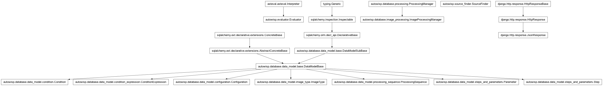

autowisp.browser_interface.processing.tune_starfind_views module
Class Inheritance Diagram

Implement views for tuning source extraction.
- autowisp.browser_interface.processing.tune_starfind_views._get_batch_description(grouping_values, grouping_expressions)[source]
Return as human readable as possible discription of a batch.
- autowisp.browser_interface.processing.tune_starfind_views._get_pending(request)[source]
Add to
request.sessionall image/channel pending star finding .
- autowisp.browser_interface.processing.tune_starfind_views._init_session(request, processing, db_session)[source]
Set default django session entries first time the interface is opened
- autowisp.browser_interface.processing.tune_starfind_views.find_stars(request, fits_fname)[source]
Run source extraction and respond with the results.
- autowisp.browser_interface.processing.tune_starfind_views.project_catalog(request, fits_fname)[source]
Solve for astrometry with current extracted stars and project catalog.
- autowisp.browser_interface.processing.tune_starfind_views.save_starfind_config(request, imtype, batch_index)[source]
Save the currently set extraction configuration to the database.